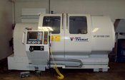

CNC soustružení2 osy souvisle řízené
CNC soustruh SF 55/1000
Dvouosý CNC soustruh pro vysoce přesné obrábění rotačních součástí z děleného i tyčového materiálu a hutních polotovarů.
Oběžný průměr nad ložem: 550 mmOběžný průměr nad suportem: 310 mm